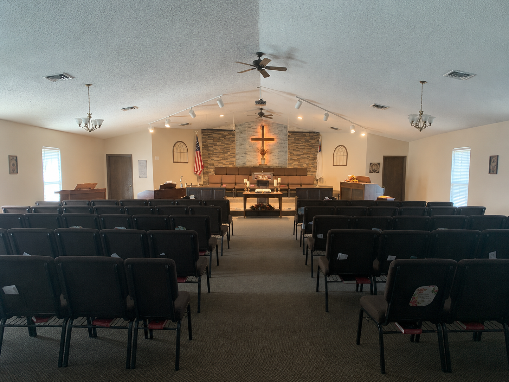

We are a warm, Bible-believing, Gospel-driven church faithful to the King James Bible. Join us this week for inspiring preaching, uplifting traditional hymns, and loving ministries for the whole family.
Join our church family every week for gospel preaching, prayer, and uplifting worship.
Visiting for the first time? We have convenient parking, friendly greeters, clean nursery care for tots, and Sunday school classes for kids and teens.
Listen to clear, verse-by-verse expository preaching from the King James Bible. Download sermon notes and grow in your daily walk with Christ.

Faith Baptist Church is an independent, Bible-believing local assembly dedicated to exalting the Lord Jesus Christ, edifying the saints, and evangelizing the lost.
Whether you are searching for a church home or desiring to learn more about God's eternal gift of salvation, we invite you and your family to worship with us. We firmly stand on the inspired, preserved Word of God found in the King James Bible.
Uncompromising, verse-by-verse preaching of God's holy word.
Salvation by grace through faith in the finished work of Christ.
Sunday school for all ages, teens, and loving nursery for tots.
Wednesday 7:00 PM corporate prayer and in-depth scripture study.
Feed your soul with expository messages from God's holy word. Listen right here or browse our message library.


Interactive Bible discussion and fellowship for teens and adults to deepen their knowledge of God's Word.
Event Details
Our midweek spiritual oasis: lifting burdens together in prayer and digging deeper into Scripture.
Event Details
Warm home-cooked food, conversation, and christian fellowship for members and first-time guests.
Event DetailsAt Faith Baptist Church, there is a place for everyone to connect, grow, and serve the Lord.

A safe, loving, and clean nursery environment for infants and toddlers during our 10:00 AM Sunday service, allowing parents to worship with peace of mind.
Learn More →
Classes beginning at 9:00 AM for adults and teens, plus young children's classes at 10:00 AM to establish strong biblical foundations from the King James Bible.
Learn More →
Every Wednesday at 7:00 PM, our church gathers to bring burdens before the throne of grace and study God's Word chapter-by-chapter and verse-by-verse.
Learn More →"For by grace are ye saved through faith; and that not of yourselves: it is the gift of God: Not of works, lest any man should boast."
Your faithful tithes and offerings sustain gospel preaching in Fostoria, support world missions, and maintain our church facilities.
"Every man according as he purposeth in his heart, so let him give; not grudgingly, or of necessity: for God loveth a cheerful giver."
— 2 Corinthians 9:7 (KJV)
• In Person: Offering boxes are available during all Sunday & Wednesday services.
• By Mail: Faith Baptist Church, 11275 W. Twp. Rd. 116, Fostoria, OH 44830.
Our church home on Township Road 116 in Fostoria, Ohio.
Our Pastor and prayer team lift up requests every Wednesday at 7:00 PM.